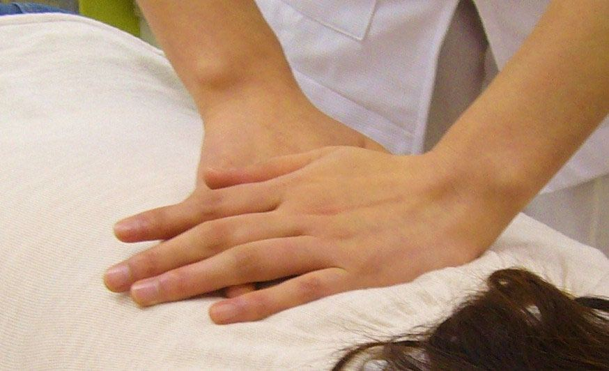
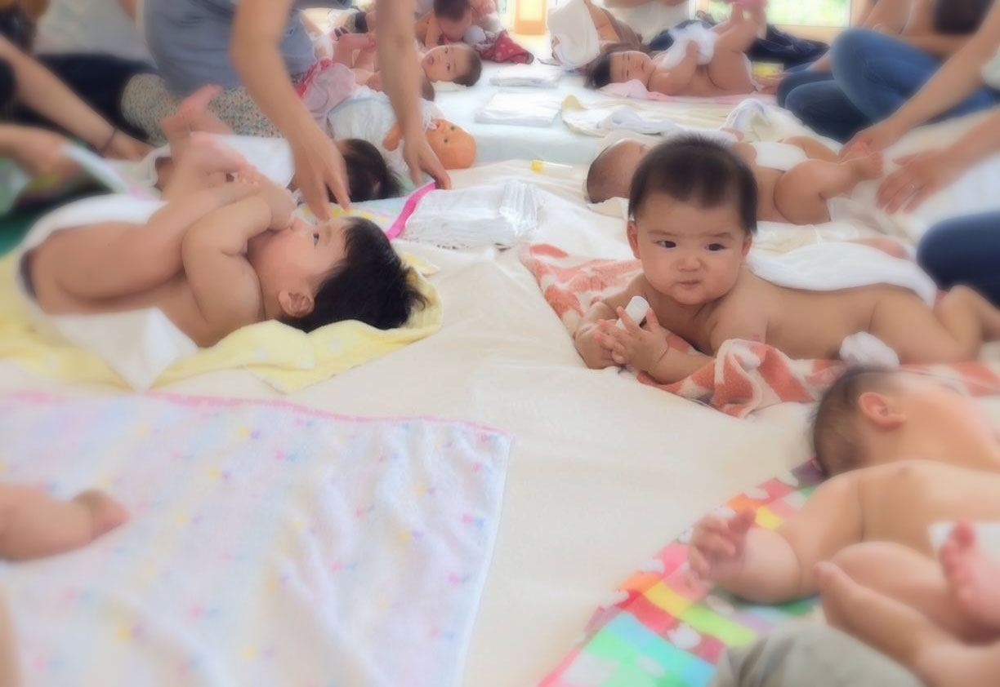
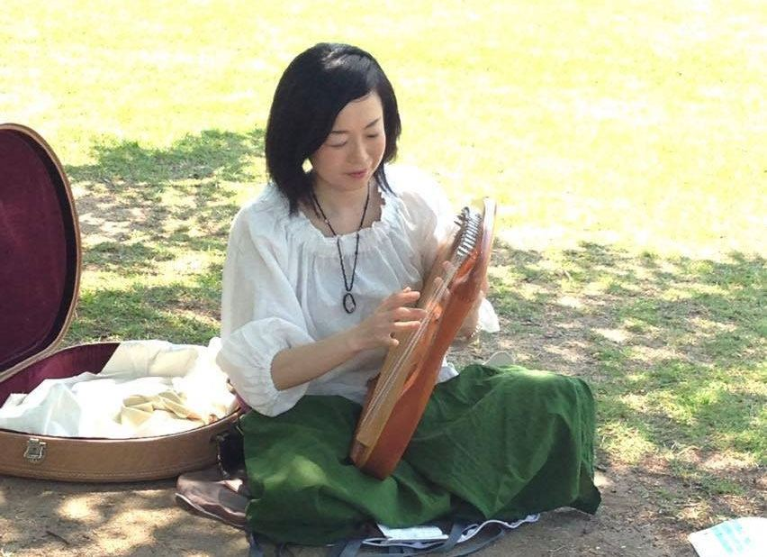

第2・第4金曜日★
森のキッチン
お料理教室です。助産院ランチを担当しているシェフが、お料理が楽しくなるコツをお伝えしています。人気教室のためご予約はお早めにどうぞ。
うまれる、食べる、生きる、作る、学ぶ
このテーマをキーワードに「いのちの森スタイル」では様々なクラス・イベントを開催しています。
助産院での出産の有無にかかわらず、どなたでもご参加いただけます。
すべてのクラスが予約制です。
開催日・空き状況・新しいイベントのお知らせは、担当者が「いのちの森スタイル」のInstagramで随時更新しています。最新情報はこちらをご確認ください。
@inochinomoristyle
※「カレンダーを見る」はInstagramのハイライト「スケジュール」が開きます。Instagramにログインしていない場合、ログインを求められることがあります。
スマホのカメラで読み取ると
Instagramが開きます
お料理教室です。助産院ランチを担当しているシェフが、お料理が楽しくなるコツをお伝えしています。人気教室のためご予約はお早めにどうぞ。
紹介文は準備中です。開催日はInstagramのカレンダー（●の日）をご覧ください。詳細・ご予約は、毎月の投稿に記載している講師のInstagramへお願いします。
フットセラピー付きのヨガ。妊婦さん・産後のお母さんどちらもご参加いただけます。初めての方も安心してどうぞ。

妊婦さんも診ることができる整体師さん（カイロプラクティック）に来ていただいています。要予約。

赤ちゃんの目を見て語りかけながら、素肌にふれる・なでる・マッサージするなどして、赤ちゃんとのコミュニケーションを楽しむ教室です。

産後のお母さん向けのクレンズヨガと、ライアー（竪琴）の生演奏が聴けるクラスです。
クラス・イベントのご予約は、各講師または下記までご連絡ください。